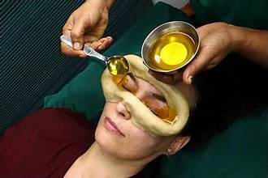

<h1 style="font-size:30px; text-align:center;">we provide all kind of panchkarm therapies in to treat the sevior and chronic illnesslike <h1>
<h1 style="font-size:50px; text-align:center;"> Vaman karma<h1>
<h1 style="font-size:20px; text-align:center;">Vamana Karma is a part of detox therapy, also known as medical emesis or medical vomiting, is one of the five Pradhana Karmas of Panchakarma which is used in treating Kaphaj disorders
<div style="text-align:center; margin-top:1px">
<hr>
<h1 style="font-size:50px; text-align:center;"> virechan karma<h1>
<h1 style="font-size:20px; text-align:center;">Virechana is the second form of Panchakarma by the virtue of which Pitta dosha is removed from the body system<h1>
<h1 style="font-size:20px; text-align:center;">‘Virechanama Pittaharnama’ <h1>
<h1 style="font-size:20px; text-align:center;">Virechana Karma is the best medicine or cure for treating the diseases emerging from vitiation of the Pitta dosha,Virechana is prescribed after properly judging the type of disease and tolerance of the patient<h1>
<div style="text-align:center; margin-top:1px">
<hr>
<h1 style="font-size:50px; text-align:center;">Basti Karma<h1> 
<h1 style="font-size:30px; text-align:center;">Basti is understood as Medicated Enema, is generally prepared with herbal decoctions, oils and then is inserted in the rectum with the help of basti netra attached to basti puatak,<h1>
<h1 style="font-size:30px; text-align:center;"> The basti therapy is primarily used for Vata Dosha’s excesses,but it has widest spectrum of Panchakarma therapies. either alone, or as the predominant Dosha deranged<h1>
<div style="text-align:center; margin-top:1px">
<hr>
<h1 style="font-size:50px; text-align:center;"> kati Basti<h1>
<h1 style="font-size:30px; text-align:center;">The word ‘Kati’ means the lower abdomen area or the waist. The word ‘Basti’ refers to the process of holding warm oil in the back region, which has been affected with pain.
Kati Vasti / Basti is a type of Ayurvedic treatment in which medicated oil is retained in a pool created by dough (made up of black gram flour) on the lower back<h1>
<div style="text-align:center; margin-top:1px">
<hr>
<h1 style="font-size:50px; text-align:center;">Janu Basti<h1>
<h1 style="font-size:30px; text-align:center;">Janu Basti is a Panchakarma therapy that involves pouring warm, medicated oil around the knee joint using a dough made of black gram flour. It helps to relieve pain, inflammation etc<h1>
<div style="text-align:center; margin-top:1px">
<hr>

<h1 style="font-size:50px; text-align:center;"> Greeva Basti<h1>
<h1 style="font-size:30px; text-align:center;"> Among all the remedies available for neck pain (acute and or chronic), Greeva Vasti (Greeva Basti) is the most popular one. It gives a magical relief from the pain and stiffness.
it is  is a soothing neck therapy where a generous quantity of herbal oils are retained on the neck to relieve occasional pain, inflammation, and stiffness<h1>
<div style="text-align:center;">
<hr>

<h1 style="font-size:50px; text-align:center;">Shiro Basti<h1>
<h1 style="font-size:40px; text-align:center;">Shiro Vasti or Shiro Vasti is sometimes referred to as Shiro Basti. Shiro means head and vasti means container. This procedure is aimed at relieving neurological ailments and diseases.
Shirovasti or Shirobasti is an Ayurvedic oil treatment where a compound is built over head and oil is retained inside the compound. <h1>
<div style="text-align:center; margin-top:1px">
<hr>
<h1 style="font-size:50px; text-align:center;">Nasya<h1><h1 style="font-size:30px; text-align:center;">Nasya karma is one among the Panchakarmas, and it is considered highly effective for treating diseases related to the head. It involves administering medicated herbs via the nasal route.
 Itinvolves instilling herbal oils, juices or powders through the nose. It benefits various conditions such as pain, stress, skin, hair, paralysis, immunity,etc<h1>
<div style="text-align:center; margin-top:1px">
<hr>
<h1 style="font-size:50px; text-align:center;"> Shrodhara<h1><h1 style="font-size:30px; text-align:center;">Shirodhara is a procedure in which oil, milk, or buttermilk is poured over the forehead for relaxation and rejuvenation<h1>
<div style="text-align:center; margin-top:1px">
<hr>
<h1 style="font-size:50px; text-align:center;"> Akshi Tarman<h1><h1 style="font-size:30px; text-align:center;"> Akshi Tarpana (Netra Tarpana) is a type of ayurvedic therapy in which the enclosure is made around the eyes and medicated medicated ghee/oil are poured over the eye<h1>
<div style="text-align:center; margin-top:1px">
<hr>
<h1 style="font-size:50px; text-align:center;"> Rakta Mokshan<h1><h1 style="font-size:30px; text-align:center;">Rakthamokshana is  the traditional Ayurvedic method for purification and cleansing of the blood Toxins by which expels out vitiated blood from the body.<h1>
<div style="text-align:center; margin-top:1px">
<hr>
<h1 style="font-size:50px; text-align:center;">Jalauka(Leach Tharapy<h1><h1 style="font-size:30px; text-align:center;">Medicinal leech therapy (MLT) or hirudotherapy is a kind of complementary and integrative treatment method applied with blood-sucking leeches. One or more leeches are attached to the skin<h1>
<div style="text-align:center; margin-top:1px">
<hr>
<h1 style="font-size:50px; text-align:center;">Agni Karma<h1><h1 style="font-size:30px; text-align:center;">Agnikarma is an ancient technique within the holistic wellness system of Ayurveda that aims to treat various musculoskeletalmusculoskeletal diseases that provides quick relief & healing<h1>
<div style="text-align:center; margin-top:0px">


